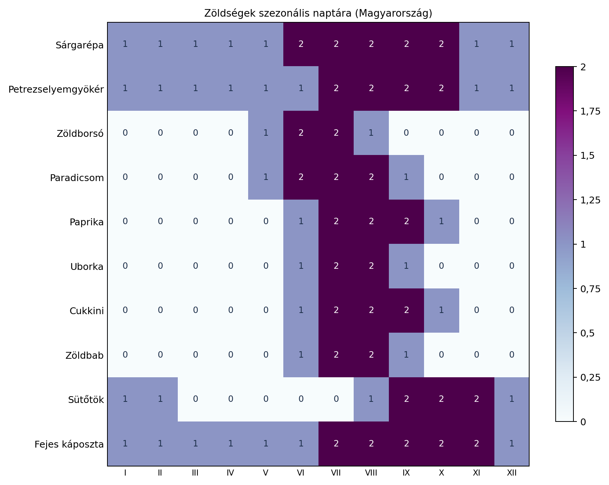

Egy konyhán minden nap találkozunk zöldséggel: reggel a salátához, délben a levesbetéthez, este a párolt körethez. Ha a szakács nem ismeri a zöldségek árurendszerét, szezonját és tárolási igényét, akkor fonnyadt salátát tálal, rothadt sárgarépát használ fel, vagy a gombát vizsgálat nélkül készíti el. Ebben az alfejezetben megtanulod, hogyan csoportosítsd a zöldségeket, milyen jellemzőik vannak, és hogyan tárold őket biztonságosan.
Képzeld el a reggeli áruátvételt a tankonyhán. A beszállító hozott ládákban sárgarépát, fejes salátát, paradicsomot, uborkát, burgonyát, vöröshagymát és egy láda csiperkegombát. A szakács minden ládát megnéz, megtapint, szagol, és hőmérővel ellenőrzi a hűtött áru belső hőmérsékletét. A salátát azonnal hűtőbe teszi, a burgonyát sötét, szellős kamrába viszi, a gombát pedig a hűtő zöldséges rekeszébe. Ha ezt jól csinálja, a zöldségek frissen maradnak, és a nap végén nem kell selejtezni.
Definíció. A zöldség a növényi eredetű élelmiszerek azon csoportja, amelyet frissen, hűtve, fagyasztva, szárítva vagy savanyítva használunk fel étkezési célra. A zöldségeket a felhasznált növényi rész és a konyhai felhasználás szerint csoportosítjuk.
A megtanulandó árurendszer hét fő csoportot tartalmaz:
| Csoport | Jellegzetes fajok | Főbb jellemzők | Tárolási szempont |
|---|---|---|---|
| Gyökérzöldségek | sárgarépa, petrezselyemgyökér, zeller, cékla, pasztinák | magas víztartalom, édeskés íz, jó rostforrás | hűvös, nedves, homokban is tárolható |
| Gumós zöldségek | burgonya, csicsóka, édesburgonya | keményítőtartalmuk magas, laktatóak | sötét, szellős, fagymentes |
| Hagymás zöldségek | vöröshagyma, fokhagyma, póréhagyma, újhagyma, medvehagyma | illóolajok, csípős íz, baktériumgátló hatás | száraz, szellős; pórét hűtve |
| Levélzöldségek és káposztafélék | fejes saláta, spenót, sóska, rukkola, kínai kel, fejes káposzta, kelkáposzta, brokkoli, karfiol | gyorsan fonnyadnak, magas víztartalmuk, C-vitamin, folsav | hűtve, magas páratartalom mellett, rövid ideig |
| Kabakosok | uborka, cukkini, sütőtök, patisszon, görögdinnye | lédúsak, enyhe ízűek, nyersen és sütve is jók | 8–12 °C-on, de hűtve is tárolhatók |
| Hüvelyes zöldségek | zöldborsó, zöldbab, cukorborsó, lóbab | fehérje- és rosttartalmuk jelentős, gyorsan veszítenek frissességükből | hűtve, rövid ideig, gyors felhasználás |
| Kalapos zöldségek (gombák) | termesztett csiperke, laska, shiitake, erdei gombák | magas víztartalom, jellegzetes umami íz, gyorsan romlanak | hűtve, szellős csomagolásban, rövid ideig |
A fenti táblázat a zöldségek áruismereti rendszerét foglalja össze. A nevek első előforduláskor magyar szakmai megnevezéssel szerepelnek; a pontos botanikai besorolást a tankönyv nem részletezi, mert a konyhai gyakorlatban a fenti csoportosítás a hasznos.
Az ábra a hét csoportot a táblázat sorrendjében mutatja, csoportonként két-öt jellegzetes zöldséggel és a tárolási szemponttal. A csoportnév mellett mindig a tárolás áll, mert áruátvételkor ebből tudod, hova kerül a láda: a gumós és a hagymás zöldség száraz, szellős raktárba, a levélzöldség, a hüvelyes zöldség és a gomba a hűtőbe.
A gombasorban szándékosan csak termesztett gomba szerepel: erdei gombát rajz vagy fénykép alapján soha ne azonosíts, azt csak gombavizsgálati jeggyel szabad átvenni (lásd lent). A zeller jelölésköteles allergén, ezért mellette „(A)” áll. A HTML-kiadásban a kvízben a kiemelt zöldséghez kell kiválasztanod a csoportját.
A zöldségek összetétele fajonként eltérő, de vannak közös jellemzők:
Az érzékszervi minőséget a következő árujellemzők mutatják: friss szín, feszes állag, ép héj, jellegzetes illat, a fajra jellemző méret és forma. A sérült, fonnyadt, rothadt vagy penészes zöldség nem vehető át, illetve nem használható fel.
A zöldségek friss fogyasztása szezonhoz kötött. A magyarországi termesztésben a tavaszi, nyári, őszi és téli időszak más-más zöldséget ad. A szezonalitás ismerete azért fontos, mert a szezonális zöldség olcsóbb, jobb ízű, és kisebb a szállítás környezetterhelése.
Ábra. A következő heatmap a jellemző hazai szezonalitást mutatja. A 0 érték azt jelenti, hogy nincs hazai áru, az 1 tárolt árut vagy elő-, illetve utószezont (korai vagy késői termést), a 2 a hazai főszezont. A gyökérzöldség és a fejes káposzta így télen is 1-es: tárolt áruként jól beszerezhető. Az adatok tájékoztató jellegűek, az üzemi beszerzésnél a tényleges piaci kínálat a mérvadó.

A naptárból leolvashatók a következő fontos időszakok:
A friss áru mellett a fagyasztott, szárított és konzervzöldségek egész évben elérhetők, és jó kiegészítők lehetnek, de a friss szezonális áru íze és tápértéke általában jobb.
Továbbvitt eredmény. A zöldségek szezonális naptárát használjuk a Gyümölcsök alfejezetben a gyümölcsszezonok összehasonlításához, a Fűszerek és fűszernövények alfejezetben a friss fűszernövények beszerzéséhez, valamint az Az élelmiszerek kiválasztása, átvétele és minőségellenőrzése alfejezetben az áruátvételi döntésekhez.
A gomba botanikailag nem zöldség, de a konyhán a zöldségek közé soroljuk, mint kalapos zöldséget. A gombákat két nagy csoportra osztjuk:
Higiénia. A vadon termő erdei gombát csak gombavizsgálati jegy vagy szakértői igazolás birtokában szabad átvenni és felhasználni. A vizsgálat tényét dokumentálni kell, a gombát a vizsgálat után azonnal fel kell használni vagy hűtve tárolni. A gombamérgezés életveszélyes lehet. Tilos ismeretlen, vizsgálat nélküli gombát ételbe tenni. A gombavizsgálat szabályait a hatályos élelmiszerlánc-felügyeleti előírások tartalmazzák (ellenőrizendő: hatályos gombavizsgálati rend).
A gombák összetétele: magas víztartalom (kb. 90%), kevés szénhidrát, kis mennyiségű fehérje, B-vitaminok, ásványi anyagok (szelén, kálium). A fehérjéjük nem teljes értékű, de ízük umami hatást ad, ezért jól használhatók húsmentes ételekhez.
A zöldségek romlását leginkább a magas víztartalom, a sérülések, a hőmérséklet és a levegő páratartalma okozza. A minőségmegőrzés alapelvei:
A zöldségek tárolási hőmérséklete fajtánként változik. Tájékoztató értékek:
A pontos értékeket mindig a saját HACCP-terv és a beszállítói utasítás határozza meg. A fenti értékek tanulási célokat szolgálnak, nem helyettesítik az üzemi előírást.
Cél: friss zöldség átvétele minőségi ellenőrzéssel, szakszerű tárolással.
Eszközök és anyagok: hőmérő, mérleg, rekeszek, címkék, hűtőkamra vagy hűtőszekrény, kézmosási lehetőség.
Előkészület: moss kezet, készítsd elő a tárolóhelyet, tisztítsd meg a rekeszeket.
Lépések:
Kritikus pontok: a hűtési lánc megszakadása, a szennyezett zöldség keresztszennyeződést okozhat, a sérült tételek gyors romlást indítanak. A mosás és a hűtve tárolás a nyers fogyasztásra szánt leveles zöldségeknél lehet kritikus szabályozási pont (CCP), ha az üzemi HACCP-terv úgy jelöli ki (ellenőrizendő: saját HACCP-terv).
A zöldségek minőségét a következő szempontok szerint ellenőrizzük:
A rossz minőségű zöldséget vissza kell küldeni, vagy azonnal ki kell selejtezni. A selejtezést dokumentálni kell.
Hiba 1: A salátát hús mellé teszik a hűtőben.
Ok: nincs elkülönített tárolóhely.
Helyes gyakorlat: a nyers zöldséget és a nyers húst
külön polcon, lefedve tárold, a húst mindig alul, a zöldséget felül.
Hiba 2: A gyökérzöldségeket megmossák, majd nedvesen
tárolják.
Ok: azt hiszik, a mosás után tovább eláll.
Helyes gyakorlat: a gyökérzöldséget mosás nélkül,
hűvös, enyhén nedves közegben tárold; mosni csak közvetlenül
felhasználás előtt szabad, mert a nedves felület gyors penészedést
indít.
Hiba 3: Erdei gombát vizsgálat nélkül vesznek át, mert a
szállító ismerős.
Ok: bizalmi kapcsolat, a veszély alábecsülése.
Helyes gyakorlat: erdei gombát csak hivatalos
gombavizsgálati jegy birtokában szabad átvenni. A mérgező gomba
felismerése nem a szakács feladata, hanem a gombaszakellenőré.
Hiba 4: A zöldségeket szobahőmérsékleten hagyják órákig a
hámozás után.
Ok: nincs időben megtervezve az előkészítés.
Helyes gyakorlat: a tisztított, darabolt zöldséget
azonnal hűtőbe kell tenni, és 1–2 órán belül fel kell használni
(ellenőrizendő: üzemi szabály).
Egy étterem salátapultjánál a vendég homokot érzett a fejes salátában. A panasz után kiderült, hogy a salátát csak egészben öblítették le, és nem szedték leveleire, így a föld a levélrésekben maradt. Ráadásul a salátát a nyers csirke mellett tárolták a hűtőben, és a lé a salátára cseppent. A konyhafőnök utasítására a salátát visszavonták, a hűtőt átrendezték, és a saláta mosását külön lépésként, ellenőrzött módon végezték. A tanulság: a leveles zöldséget mindig leveleire szedve, több vízben kell mosni, és a nyers hústól elkülönítve kell tárolni.
Válaszok az alfejezet végén.
1. feladat (A)
Csoportosítsd a következő zöldségeket: sárgarépa, fejes saláta,
burgonya, uborka, zöldborsó, vöröshagyma, csiperkegomba. Írd be
mindegyiket a megfelelő csoportba!
2. feladat (A)
Számítsd ki a szükséges bruttó tömeget! 10 adag leveshez 600 g
tisztított sárgarépára van szükség. A sárgarépa tisztítási vesztesége
25%. Hány gramm bruttó sárgarépát rendelj?
3. feladat (B)
Párosítsd a tárolási módot a zöldséggel!
- burgonya
- fejes saláta
- vöröshagyma
- paradicsom
a) hűtő, 0–5 °C, magas páratartalom
b) sötét, szellős, 4–10 °C
c) száraz, szellős, hűvös raktár
d) 8–12 °C, de hűtve is tárolható rövid ideig
4. feladat (B)
Magyarázd el, miért kritikus pont a leveles zöldség mosása a nyers
fogyasztásra szánt salátáknál! Mit kell ellenőrizned a mosás során?
5. feladat (C)
Tavaszi menühöz fejes salátát tervezel köretként. Egy adaghoz 150 g
tisztított salátalevél kell. A fejes saláta tisztítási vesztesége 15%.
Számítsd ki, mennyi bruttó fejes salátát kell beszerezni 30 adaghoz! A
menühöz még 3 kg tisztított uborka is kell; az uborka vesztesége 10%.
Mennyi bruttó uborkát vegyél?
6. feladat (D)
Egy beszállító erdei vargányát hoz, de nincs nála gombavizsgálati jegy.
Mit teszel a HACCP-eljárás szerint? Írd le lépésenként, és indokold a
döntést!
Önellenőrzés – válaszok
1. feladat megoldása
- Gyökérzöldség: sárgarépa
- Gumós: burgonya
- Hagymás: vöröshagyma
- Levélzöldség: fejes saláta
- Kabakos: uborka
- Hüvelyes: zöldborsó
- Kalapos/gomba: csiperkegomba
2. feladat megoldása
Adott: nettó tömeg
,
veszteség
.
Keresett: bruttó tömeg
.
Képlet:
Behelyettesítés:
.
Ellenőrzés:
,
tehát a nettó mennyiség stimmel. 800 g bruttó sárgarépát kell
rendelni.
3. feladat megoldása
- burgonya: b) sötét, szellős, 4–10 °C
- fejes saláta: a) hűtő, 0–5 °C, magas páratartalom
- vöröshagyma: c) száraz, szellős, hűvös raktár
- paradicsom: d) 8–12 °C, de hűtve is tárolható rövid ideig
4. feladat megoldása
A leveles zöldség mosása azért lehet kritikus pont, mert a nyers
fogyasztásra szánt salátán a talajból származó baktériumok, homok és
növényvédőszer-maradványok maradhatnak. Hőkezelés nélkül ezek a
szennyeződések közvetlenül a vendég szervezetébe juthatnak. A mosás
során ellenőrizni kell: folyó víz, levelekre szedés, többszöri öblítés,
csepegtetés, utána hűtve tárolás. Az üzemi HACCP-terv határozza meg,
hogy ez a lépés CCP-e (ellenőrizendő: saját
HACCP-terv).
5. feladat megoldása
A fejes saláta esetén: nettó adag/fő = 150 g, adagszám = 30, teljes
nettó =
.
Veszteség 15%, tehát
.
Kerekítve: 5,3 kg bruttó fejes saláta.
Az uborka esetén: nettó szükséglet = 3 kg, veszteség 10%, tehát
.
Kerekítve: 3,4 kg bruttó uborka.
6. feladat megoldása
Lépések: 1. A tételt nem veszed át, a beszállítónak visszaadod (nem
kerül a konyhai hűtőbe). 2. Jelzed a konyhafőnöknek és a minőségért
felelős személynek, hogy a tételhez nincs gombavizsgálati jegy. 3.
Rögzíted az átvétel megtagadását (tétel, beszállító, ok, felelős neve).
4. Csak olyan új szállítmányt veszel át, amelyhez gombavizsgálati
igazolás tartozik (ellenőrizendő: hatályos gombavizsgálati rend).
Indoklás: az erdei gomba mérgezési kockázata magas, ezért a vizsgálat hiánya esetén a tétel nem tekinthető biztonságosnak. A HACCP szerint a gomba átvétele olyan ellenőrzési pont, ahol a veszélyt csak vizsgálati jegy elfogadásával lehet kizárni.
A zöldségeket a felhasznált növényi rész szerint hét csoportba soroljuk: gyökér-, gumós, hagymás, levél-, kabak-, hüvelyes és kalapos (gomba) zöldségek. Mindegyik csoportnak más a víz-, szénhidrát-, vitamin- és ásványianyag-tartalma, ezért eltérő a tárolási igénye. A friss zöldség minőségét a szín, az állag, az illat, a héj épsége és a fajra jellemző forma mutatja. A szezonális naptár segíti a beszerzést: tavasszal a zsenge levelesek és hüvelyesek, nyáron a kabakosok és paprika, ősszel a káposztafélék és gyökérzöldségek, télen a tárolt áruk jellemzőek. Az erdei gombát csak gombavizsgálati jegy birtokában szabad felhasználni. A tárolásnál be kell tartani a hűtési hőmérsékletet, a FIFO-elvet és a nyers hústól való elkülönítést. A leveles zöldségek mosása a nyers fogyasztásnál kritikus pont lehet. Továbbvitt eredmények: a zöldségek szezonális naptárát és árujellemzőit használjuk a Gyümölcsök, a Fűszerek és fűszernövények és az Az élelmiszerek kiválasztása, átvétele és minőségellenőrzése alfejezetben.
Forrástípusok: magyar és EU élelmiszerjog
(178/2002/EK, 852/2004/EK, 1169/2011/EU); NÉBIH útmutatók a zöldségek
tárolásáról és a gombavizsgálatról; a vendéglátó-ipari jó higiéniai
gyakorlat útmutatója; üzemi HACCP-tervek; zöldségtermesztési és tárolási
szakkönyvek.
Ellenőrizendő: a zöldségek pontos tárolási hőmérsékleti
és páratartalmi értékei; a gombavizsgálat hatályos eljárási rendje; a
zöldségcsoportok botanikai besorolása; a szezonális naptár aktuális
hazai termesztési adatai; a zeller allergén jelölése a 1169/2011/EU II.
melléklete szerint; a szolaninra vonatkozó határérték.